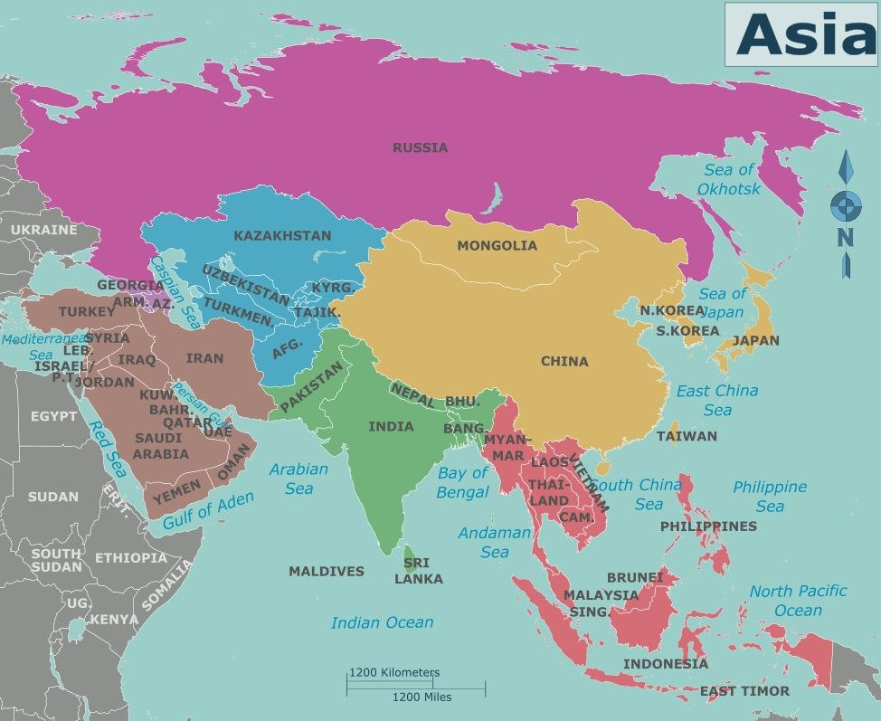

Asia is the Earth's largest and most populous continent, located primarily in the eastern and northern hemispheres. Though it covers only 8.7% of the Earth's total surface area, it comprises 30% of Earth's land area, and has historically been home to the bulk of the planet's human population (currently roughly 60%). Asia is notable for not only overall large size and population, but unusually dense and large settlements as well as vast barely populated regions within the continent of 4.4 billion people. Asia has exhibited economic dynamism (particularly East Asia) as well as robust population growth during the 20th century, but overall population growth has since fallen to world average levels.
